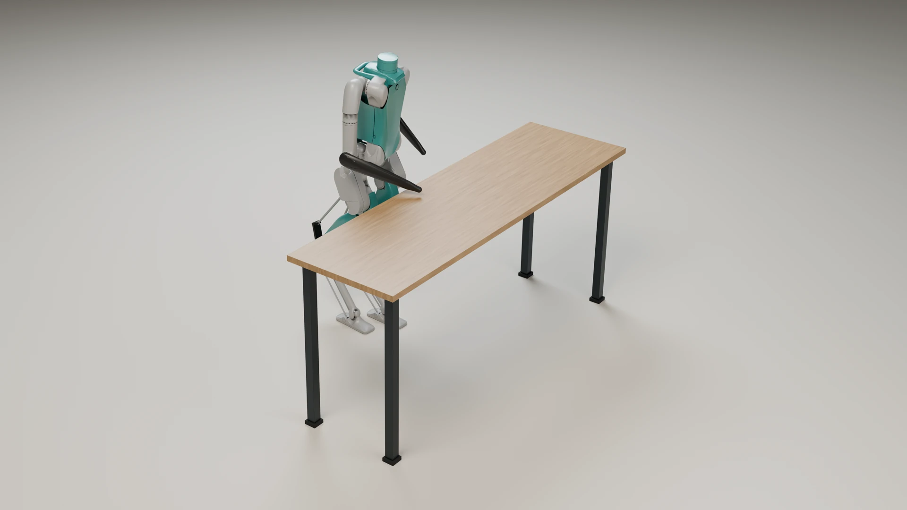
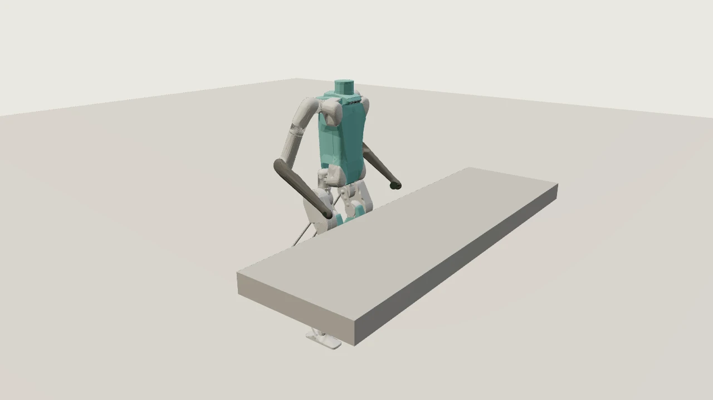
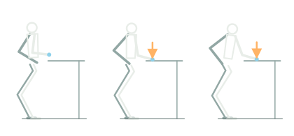

Opt2VLAForce-Aware Vision-Language-Action
for Contact-Rich Humanoid Whole-Body Manipulation

Georgia Institute of Technology
* Equal contribution
Similar motions. Different forces.
A robot's job is not just to move to the right place. It must also control how gently it grips or how firmly it presses. Opt2VLA turns those differences in language into motion and force commands, so people can specify how a task should be carried out.
An illustrated film built from recorded simulation rollouts.
TL;DR Opt2VLA connects language instructions to both motion and contact force. A single multi-task VLA policy jointly predicts geometric motion goals and continuous force references, while task-specific whole-body controllers translate them into physical interaction.
Whole-body trajectory optimization provides physically grounded supervision for controller training. Controller rollouts then supply multimodal demonstrations for VLA fine-tuning, pairing observations with motion, force, and language targets. Evaluations in simulation and on humanoid hardware demonstrate language-conditioned force modulation during contact-rich manipulation.
Abstract
Humanoid robots are expected to perform diverse human-level tasks in daily environments, many of which require precise regulation of interaction forces. While recent vision-language-action (VLA) models have shown promise for semantic planning and visuomotor control, existing humanoid systems primarily represent actions through geometric motion goals and rely on whole-body controllers focused on motion tracking, with limited explicit reasoning or control of interaction forces. This limitation is particularly relevant in contact-rich tasks, where geometrically similar motions may require different force regimes depending on the task context and where visual observations may become unreliable after contact.
In this work, we present Opt2VLA, a force-aware VLA framework that introduces explicit force commands at the VLA-to-control interface for humanoid whole-body manipulation. A single multi-task VLA policy jointly predicts both geometric motion goals and continuous contact-force references, which are tracked by task-specific reinforcement learning (RL)-based whole-body controllers. To provide scalable and physically grounded supervision, we generate dynamically feasible and contact-consistent training data via whole-body trajectory optimization (TO) with explicit force references.
We evaluate Opt2VLA on three contact-rich humanoid tasks and show that explicit force conditioning enables more accurate and consistent force regulation than motion-only control, while physically grounded torque supervision from TO further improves force tracking accuracy and stability. Closed-loop evaluations further demonstrate language-conditioned force modulation with Opt2VLA in simulation and on humanoid hardware.
From language to motion and contact force.
Geometric goals specify where to move, but similar motions can require different contact forces. Opt2VLA makes the desired contact force an explicit command alongside motion, so the policy can specify both the movement and the strength of the interaction.
A single VLA policy predicts 3D hand and foot position targets together with contact-force references from language, vision, kinematic state, and measured joint-torque history. Task-specific force-conditioned controllers with torque supervision (FCT) translate these predictions into coordinated whole-body action.
- Predict
Force-aware VLA
One policy across box pickup, shelf-box pushing, and surface wiping.
Jointly predicts motion and force sequences.
- Explicit interface
Motion + force
- 3D position targets
- Left and right hands and feet
- Contact-force references
- Desired hand contact forces
- Track
FCT controller
Task-specific whole-body policy.
Tracks motion and regulates contact force.
Joint-position commands
- Execute
Robot + PD loop

Physical interaction with the environment.
Robot → FCT
Kinematic state + measured joint torque
Robot → VLA
RGB + kinematic state + measured joint-torque history
- Offline optimization
Whole-body TO
Enforces dynamics, contact constraints, and actuator limits under a prescribed contact schedule.
Motion references + optimized joint torques
- Controller learning
FCT training
Tracks motion and prescribed force commands.
TO joint torques: privileged training supervision
- Data collection
Controller rollouts
Simulation and hardware executions record RGB, kinematic state, and measured joint torque.
Observations + language paired with commanded end-effector and force targets
- VLA policy learning
VLA fine-tuning
Fine-tunes a pretrained VLA on multimodal demonstrations.
Joint prediction of 3D end-effector positions and contact-force targets
Next, learn to turn a force command into contact.
The low-level controller has the physical job: keep the humanoid coordinated while tracking position and force targets. We compare motion-only control, force conditioning, and force conditioning with optimized torque supervision—FCT.
The important comparison is FC versus FCT: both receive force commands, but FCT also learns from the optimizer’s torque references during training. The errors below measure how closely each controller realizes the requested force.
- MO — motion only. Geometric motion tracking, without a force command or force-tracking objective.
- FC — force conditioned. Adds the target contact force and a force-tracking objective.
- FCT — force conditioned with torque supervision. Adds TO-derived joint-torque supervision during training.
| Task | Controller | 5 N | 10 N | 15 N | 20 N | Avg. |
|---|---|---|---|---|---|---|
| Surface wiping | FC | 3.1 ± 2.4 | 2.6 ± 2.5 | 2.5 ± 1.9 | 1.5 ± 1.8 | 2.4 ± 2.9 |
| FCT | 2.6 ± 2.6 | 1.7 ± 2.1 | 1.3 ± 1.5 | 1.0 ± 1.2 | 1.7 ± 2.1 | |
| Shelf-box pushing | FC | 4.7 ± 0.6 | 9.2 ± 1.1 | 13.7 ± 1.1 | 17.1 ± 1.4 | 11.2 ± 4.8 |
| FCT | 3.9 ± 1.2 | 3.5 ± 3.4 | 2.5 ± 3.5 | 7.0 ± 6.7 | 4.2 ± 5.5 | |
| Box pickup | FC | 1.0 ± 1.2 | 1.6 ± 0.9 | 2.5 ± 0.6 | 3.5 ± 0.6 | 2.3 ± 1.4 |
| FCT | 0.7 ± 0.5 | 0.5 ± 0.5 | 0.6 ± 0.7 | 1.6 ± 1.1 | 0.9 ± 1.0 |
FCT achieves lower force-tracking MAE than FC at every reported force level. Its average error falls from 2.4 to 1.7 N for surface wiping, from 11.2 to 4.2 N for shelf-box pushing, and from 2.3 to 0.9 N for box pickup. Physically, a force target specifies the desired interaction, but not how the joints should coordinate their effort to realize it. TO computes torque references alongside feasible motion under prescribed contact wrenches, accounting for whole-body dynamics, contact constraints, and actuator limits. FCT uses these references as additional training guidance beyond the force-tracking reward shared with FC. The reduced errors are consistent with torque supervision helping the controller learn how to produce the requested force while coordinating the whole body.
Live MuJoCo controller
The low-level FCT controller runs live in your browser, following a predefined trajectory-optimization (TO) motion reference. Force targets follow TO unless force adjustment is enabled, which supplies an online command within the same contact schedule. Apply push or drag disturbances, or change box mass for pickup and table height for wiping on reset. These physical changes leave the motion reference unchanged.
Experimental browser port, separate from the reported MJX evaluations. One scene at a time; approximately 60 MB initial download. Desktop recommended.
Loads only when requested.

Drag inside the 3D view to orbit the camera; scroll to zoom. Hold Shift while dragging the robot or box to apply a bounded force (up to 35 N). Push buttons apply 20 N for 0.25 s. Off-screen simulation pauses automatically.
Generate structured motion–force data at scale.
Learning contact-rich manipulation requires supervision that aligns motion goals and desired contact forces with visual observations, robot feedback, and language. Collecting diverse, consistently force-labeled data for humanoids is non-trivial: demonstrations must capture physical interaction while maintaining balance and coordinating whole-body motion.
Opt2VLA combines whole-body trajectory optimization with trained FCT controllers to generate these demonstrations. TO provides motion references under prescribed contact forces; controller rollouts record how the robot actually executes them. Varying force levels, task configurations, object properties, and scene appearance expands the simulation data, complemented by a smaller set of hardware executions. Motion and force labels come from the issued commands; RGB, kinematic state, and measured joint torque come from the resulting execution.
- Force levels
- Continuous contact-force targets
- Task configurations
- Motion goals and object poses
- Object properties
- Task-specific physical variation
- Scene appearance
- Object and environment colors
From a force-specified trajectory to a training example
Motion + force references

Four end-effectors: both hands and both feet.
Base-relative positions, local axes.
Whole-body dynamics + contact constraints.
Motion and force share one contact schedule.
FCT controller rollouts
← Kinematics + joint-torque feedback
Measured upper-body joint torques (Nm)
Observations retain the robot’s actual response, including tracking imperfections.
A multimodal demonstration
“Wipe the table with firm pressure.”
| Stream | t0 | t1 | … | tT |
|---|---|---|---|---|
| Observations | ||||
| Chest RGB | I0 | I1 | … | IT |
| Kinematic state | s0 | s1 | … | sT |
| Measured torques | τ0 | τ1 | … | τT |
| Command labels | ||||
| 3D EE targets | p0 | p1 | … | pT |
| Hand-force targets | f0 | f1 | … | fT |
Each column is one synchronized timestep. Symbols denote full vectors or images, not individual scalar values: p contains four XYZ targets; f contains two hand-force targets; τ contains eight joint torques.
The key is explicit, time-aligned motion–force supervision: the desired interaction is specified before execution, while the learner observes how the robot actually realizes it. Additional task configurations and controller rollouts can extend the dataset while preserving the same structured labels.
Finally, let language specify the task and its force.
A geometric path specifies where to move, but not uniquely how strongly to interact. Similar motions can require different contact forces depending on the instruction and task context. Opt2VLA makes motion and contact force joint prediction targets: one VLA policy predicts temporally aligned 3D end-effector targets and hand-force commands from language and multimodal observations. This gives language a direct route to specifying the desired interaction, while FCT handles its joint-level realization and whole-body coordination.
To ground these predictions in physical interaction feedback, the policy uses measured joint-torque histories alongside vision and kinematic state. Torque histories provide complementary evidence of loading and how the interaction evolves over time. In our C7 model, separate encoders give kinematic history and torque feedback dedicated inputs to the action model. An auxiliary future-torque prediction objective encourages the model to anticipate the robot’s physical response. The controller interface remains motion and force commands; closed-loop ablations test how these design choices affect task completion, agreement with the requested force level, and force tracking.
Architecture and simulation joint SR
Token shapes and training details
Observation encoding. Each kinematic sample contains 46 values: base linear/angular velocities and 20 joint positions/velocities. C0–C3 use the current observation; C2/C3 append eight current arm-joint torques. C4–C7 and C8 use ten samples at 200-ms spacing, spanning 1.8 s. C4/C5 concatenate torque with state before padding and flattening the history into one state token. C6/C7/C8 separately encode kinematic history and the 10 × 8 torque history into one token each. History length is not token count.
Tokens and controller outputs. H is the predicted action horizon, distinct from observation history. The DiT input contains H action tokens plus one state token, or H + 2 tokens with dedicated torque conditioning. Dₛ and Dₐ are padded state/action widths; d and dₒ denote input-token and DiT output-feature widths. Only the H action positions feed the shared readout. After N flow-matching updates and unnormalization, the joint chunk supplies H × 12 motion targets (XYZ for both hands and feet) and H × 2 contact-force targets (one scalar per hand). Separate output blocks do not imply separate decoders.
Auxiliary future torque. C1/C3/C5/C7/C8 reserve the last eight channels of each padded action row for future measured arm-joint torque. Motion, force, and these auxiliary channels are jointly noised, encoded, and denoised; the auxiliary loss is masked and weighted separately. At inference, future torque is generated from noise, not supplied as an observation or sent as a robot command. Orange identifies observed torque; magenta identifies auxiliary future torque, not additional tokens or a fixed latent-channel partition.
Training and inference. The VL connector includes feature normalization and self-attention before cross-attention conditioning. T-H trains this connector, input/output projectors, and the action model while freezing the language and vision backbones; C8 also fine-tunes those backbones. Each inference call holds observations fixed while re-encoding the updated chunk for N iterations. The inspected C7 export uses H = 40, N = 4, Dₛ = Dₐ = 132, d = 1536, dₒ = 1024, and auxiliary-loss weight 0.1. These are checkpoint settings, not fixed architectural requirements. Tensor grids abbreviate dimensions; model volumes are not parameter-count scales.
Rates are the paper’s joint success rates: 30 episodes per task, 90 overall. C0 (GR00T) is the Digit-adapted motion–force baseline.
Beyond task completion: language-specified force in action.
Completing a manipulation task does not establish that the robot used the requested force. A successful pickup or wipe can still apply too little or too much force for the instruction. We evaluate the full language-to-contact loop: task completion, agreement between VLA-issued commands and the requested force regime, and agreement between commanded and realized forces. Joint success requires all three gates to pass. The force gates include all command-active windows, not only a successful attempt.
To test how interaction feedback supports this capability, we compare nine VLA configurations that all predict motion and contact force and share the same task-specific FCT controllers. Scenes, prompts, and inference settings are held fixed while we vary torque encoding, observation history, auxiliary future-torque supervision, and backbone fine-tuning. Each variant runs 90 simulation episodes across three tasks and three force levels. This controlled comparison tests whether representing and predicting physical feedback improves language-conditioned execution, beyond geometric task completion alone.
Loading evaluation records…
| Configuration | Box pickup | Shelf push | Wiping | Overall | ||||||||
|---|---|---|---|---|---|---|---|---|---|---|---|---|
| Task | + Intent | Joint | Task | + Intent | Joint | Task | + Intent | Joint | Task | + Intent | Joint | |
Task → task + force intent → task + force intent + tracking. Counts appear below each percentage. Thirty episodes per task, 90 overall; underlines mark column-best results, including ties.
Opt2VLA achieves 82.2% overall joint success, the highest rate in this comparison. It ties with C8 on pickup, with C6 on shelf pushing, and with C6 and C8 on wiping.
What each gate measures
- Task. Pickup: the box clears the table by 5 cm. Shelf push: the box reaches the right wall. Wiping: at least one 5 cm stroke within 30° of the instructed direction.
- Force intent. The pooled issued mean over all command-active windows falls in the prompt band. Both hands pass independently for pickup; the right hand is checked for shelf pushing and wiping.
- Tracking. The absolute difference between pooled issued and measured means is at most 5 N for each required hand, using that same union of windows.
A command window begins after the maximum issued force across required hands exceeds 0.5 N for 0.1 s and ends after it stays at or below 0.5 N for 0.2 s. Confirmed boundaries are backdated. All controller samples within these windows are pooled, including contact loss and unsuccessful attempts; gaps are excluded. Windows still active at termination are retained. One command-associated task completion is sufficient for the task gate. No command window means force-gate failure. All 810 episodes remain in the denominator.
| Gentle | Firm | Strong |
|---|---|---|
| [0, 9] N | (5, 16] N | (12, 22] N |
Results for all nine task–instruction combinations
| Task | Instruction | Task | Task + intent | Joint |
|---|
C7 force and end-effector tracking
Loading tracking statistics...
| Configuration | Box pickup | Shelf pushing | Surface wiping | Overall | ||||||||
|---|---|---|---|---|---|---|---|---|---|---|---|---|
| MAE | Mean | n | MAE | Mean | n | MAE | Mean | n | MAE | Mean | n | |
MAE pools absolute errors over timesteps. Mean averages per-episode mean-force errors. n counts episodes with command windows. Underlines mark the lowest errors.
These errors describe tracking when force is commanded, including unsuccessful trials. Coverage differs, so they complement success rates rather than rank policy performance alone.
Force error definitions
Both metrics use the original full-recording command-window union. Pickup averages hand-wise absolute errors; shelf pushing and wiping use the right hand. Overall equally weights tasks. Episodes without command windows have undefined error, not zero error, and remain failures in success rates.
Where episodes fall short
Select a failure branch or joint success to inspect one episode. Each failure is assigned to its first unmet gate; zero-count groups have no example.
The breakdown uses task → intent → tracking order. Episode details show all independent gate failures; these are not causal diagnoses of the VLA or controller.
Recorded playback · C7 interactions
One successful C7 episode per task and force instruction, selected from the evaluation above. Shelf examples share reference scene 08 and each has one naturally closed command window. Full recordings remain available in the outcome browser.
Loading outcome examples…
Language-specified force on the physical robot.
Similar motions can produce very different physical interactions. Opt2VLA makes the requested force level part of the action: it jointly commands motion and contact force, while FCT turns those commands into whole-body execution.
We test both FCT's low-level force regulation and the full vision-language-action loop on Digit. The same VLA checkpoint executes box pickup, shelf-box pushing, and surface wiping under gentle, firm, and strong instructions.
Hardware demonstrations and 45 instrumented trials. Video and force playback are independent recordings.
Box pickup
Loading force recordings...
Shelf-box pushing
Loading force recordings...
Surface wiping
Loading force recordings...
Force levels across all hardware trials
Mean ± between-trial standard deviation in newtons; each trial has equal weight. Pickup uses the final 2 s of loaded holding, shelf pushing the detected main-contact phase, and wiping the estimated contact/command overlap before 17 s. One gentle shelf trial lacked valid main contact (4/5 used); all other groups use 5/5.
| Task | Prompt | VLA command (N) | Measured (N) | Trials used |
|---|
From requested force to realized contact
Loading force summary...
Across 30 RL-only trials per task, FCT achieves mean absolute force errors of 1.7 N for box pickup, 3.9 N for shelf-box pushing, and 7.0 N for surface wiping. In 45 closed-loop Opt2VLA trials, the mean VLA-issued commands fall within the intended force regimes, and mean realized forces increase from gentle to firm to strong. Wiping's larger command-to-measurement gap is consistent with the RL-only tracking bias, suggesting that low-level force regulation contributes to the gap even when the VLA selects the intended force level.
Autonomy includes how the robot interacts.
Task completion tells us whether a robot achieved an outcome, not whether it applied the force the instruction called for. Geometry alone leaves that physical interaction under-specified. Opt2VLA makes force an explicit, learnable command, linking language to whole-body execution through physically grounded training and interaction feedback. This shifts the goal from reproducing a motion to specifying and regulating how the robot makes contact.
BibTeX
arXiv:2609.23968 (2026)
@misc{liu_opt2vla,
title = {{Opt2VLA}: Force-Aware Vision-Language-Action for Contact-Rich Humanoid Whole-Body Manipulation},
author = {Liu, Fukang and Chen, Yipu and Jang, Jaehwi and Xu, Danfei and Kira, Zsolt and Zhao, Ye},
year = {2026},
eprint = {2609.23968},
archivePrefix = {arXiv},
primaryClass = {cs.RO},
url = {https://arxiv.org/abs/2609.23968}
}